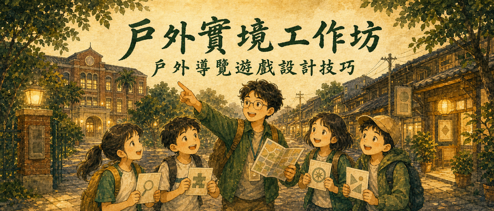
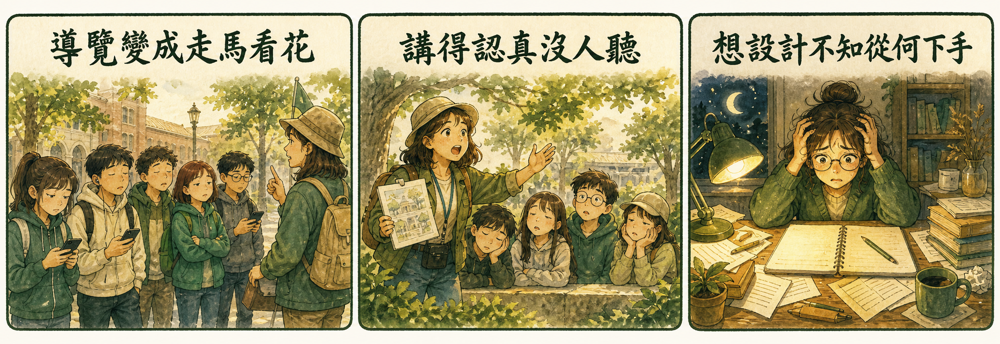
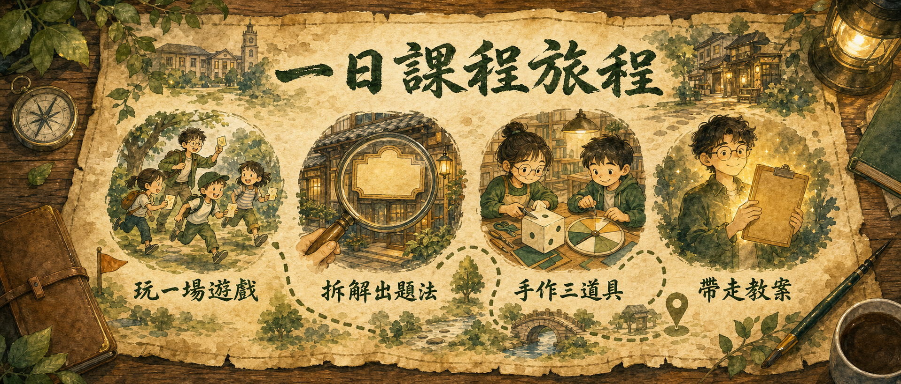
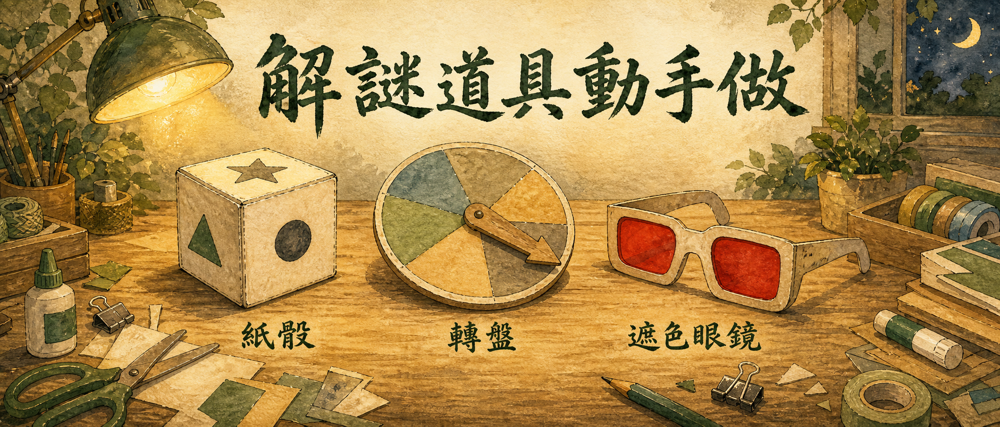

戶外導覽遊戲設計技巧
整個校園和街區，都是你的解謎關卡
上午親身玩一場戶外實境遊戲、拆解「現地出題」的方法；
下午親手做三樣解謎道具，帶走一份能直接執行的導覽遊戲教案。
精心安排的校外教學，學生排著隊拍完照就滑手機。走過了，什麼都沒留下。
你查了一堆典故賣力解說，抬頭一看——眼神渙散。知識用「講」的，進不了他們的腦袋。
聽說實境解謎很紅，也想幫學生辦一場。但謎題怎麼出？路線怎麼排？道具去哪生？完全沒頭緒。

招牌上的顏色、廟埕的柱子數量、告示牌上的字——
現場的每一樣東西，都能變成謎題的線索。
從玩家 → 設計師 → 帶隊者，一天走完三種角色。

分組出發，實際跑一場戶外實境遊戲「謎熊康普利」——看影片抓線索、LINE 闖關、在小鎮地圖上追出黑衣人的真面目。你會先體驗到「學生為什麼會瘋掉」。
把剛剛玩過的每一關攤開來看：顏色、數量、文字轉換⋯⋯招牌、地磚、告示牌都能出題。學會這套方法，任何場地你都能就地取材。
紙骰、轉盤、遮色眼鏡——三樣經典解謎道具親手做一輪，並練習把道具「合理地放進故事情境」，讓玩家拿到道具的瞬間又驚又喜。
用你自己場域的照片實際出題，現場互玩互評。離開教室時，手上就有一份能直接帶學生跑的導覽遊戲教案。
道具不用貴，會用才是魔法。三樣都是低成本、高驚喜的經典款。

立方體謎題盒，六個面都能藏線索，翻轉對位就是一道謎。
大中小三層圓盤，轉到正確角度線索才會對齊——經典的密碼盤玩法。
戴上紅色濾片，藏在圖片裡的答案才會浮現——全場尖叫指數最高。